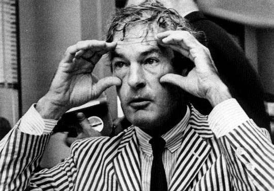
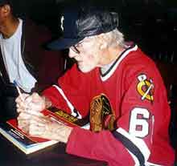

|
Timothy LearyTimothy Leary (October 22, 1920 - May 31, 1996) "Six words: drop out, turn on, then come back and tune it in... and then drop out again, and turn on, and tune it back in... it's a rhythm... most of us think God made this universe in nature-subject object-predicate sentences... turn on, tune in, drop out... period, end of paragraph. Turn the page... it's all a rhythm... it's all a beat. You turn on, you find it inside, and then you have to come back (since you can't stay high all the time) and you have to build a better model. But don't get caught - don't get hooked - don't get attracted by the thing you're building, cause... you gotta drop out again. It's a cycle. Turn on, tune in, drop out. Keep it going, keep it going... the nervous system works that way... gotta keep it flowing, keep it flowing..." Okay, so it's a little over six words, but it's the debut pop-culture rap delivered by counterculture guru Dr. Timothy Leary, a man who gobbled over 5,000 doses of LSD in his lifetime and inspired President Richard M. Nixon to call him "the most dangerous man in America." Leary was an intelligent, witty, unabashed hedonist who later in life became an Internet enthusiast. The government was indeed alarmed by how quickly teenagers flocked to Leary in the sixties and seventies. At the time, television and newspapers were filled with sensationalist tales of young people having horrible, deadly drug experiences. Politicians, police officials, and institutional psychiatrists all denounced LSD and marijuana as the most horrific threats ever confronted by the human race. When Leary sat before Ted Kennedy at a 1966 Senate hearing on LSD, he expressed disappointment at the media's complete absence of stories involving alcohol abuse, or the deaths resulting from Henry Ford's shitty automobiles. Timothy Leary was a professor at Harvard University when he began experimenting with psilocybin, acid, and other hallucinogens. His test subjects included prominent Bohemian luminaries like Thelonious Monk, Aldous Huxley, Allen Ginsberg, William S. Burroughs, and Jack Kerouac. After running low on beatniks, he switched to prison inmates, homeless people, and religious students. Leary argued publicly that hallucinogens could be used to treat personality disorders, but ultimately these beliefs got him booted from Harvard. His lifelong enthusiasm for tripping out would quickly overshadow his acclaim as one of America's most innovative psychologists. The inevitable goals of LSD sessions were (a) to discover and make love with God, (b) to discover and make love with yourself, and (c) to discover and make love with a woman.
Meanwhile, Marianne had been suffering from post partum depression, and she began to drink heavily. She and Leary fought with regularity. On his 35th birthday, he awoke to find Marianne in a closed garage with the car running. She was dead, the first in a series of family tragedies. Leary would later experience two more divorces, and the suicide of his daughter.
A trial in the most conservative county in California (and home of Richard M. Nixon) yielded a sentence of thirty years in prison for Dr. Leary, an offense normally warranting six months probation. During the appeal process, Leary was sent directly to jail. Astonishingly, he was given a prison psychological test largely based on his own research, and experts came to the conclusion that Leary appeared "healthy" enough to be transferred to a minimum security prison in San Luis Obispo. Leary promptly escaped. He hoisted himself to the rooftop, climbed up
a telephone pole, shimmied along a cable across the prison yard, and dropped
over barbed wire to the highway below. He was smuggled out of the country with
a fake ID. He was arrested Upon release, Leary discovered his popularity had waned. He entered the lecture circuit as a self-proclaimed high priest of the psychedelic movement, and continued to evangelize recreational drug use. Joining him at the podium was convicted Watergate felon G. Gordon Liddy, and together the two embarked upon a modest debating tour, appearing on college campuses from coast to coast. The reviews were mixed, and critics lamented the fact that Leary, a former Harvard professor, was now a nightclub comedian. He was fifty-six years old with no home, no job, no credit, and dwindling credibility. He moved to Los Angeles, and started socializing in Hollywood circles, a natural evolution for those attempting to alter perception. He believed that Hollywood and the Internet would be the LSD of the 90's, empowering people on a massive scale.
Dr. Leary died of inoperable prostate cancer, and he'd planned an elaborate death ritual for himself. He'd set up webcams where fans of his work could watch him commit suicide in real time. Instead he died in his sleep, uttering the last words: "why not." Later, his ashes were loaded into the same 9x12 inch canister containing the remains of Star Trek creator Gene Roddenberry and blasted into space on the Pegasus Rocket. See also: Drugs. |
 In
1944, while training in Pennsylvania, he met a woman named Marianne. They got
married, moved to sunny downtown Berkeley, and had two kids. Leary earned a
doctorate in psychology, and was appointed Director of Psychological Research
at the Kaiser Foundation. He came to discover that one third of patients who
receive traditional psychotherapy get better, one third get worse, and one third
stay exactly the same. He wondered if people wouldn't be better off just getting
high.
In
1944, while training in Pennsylvania, he met a woman named Marianne. They got
married, moved to sunny downtown Berkeley, and had two kids. Leary earned a
doctorate in psychology, and was appointed Director of Psychological Research
at the Kaiser Foundation. He came to discover that one third of patients who
receive traditional psychotherapy get better, one third get worse, and one third
stay exactly the same. He wondered if people wouldn't be better off just getting
high. In
1970, he declared himself a candidate for governor of California - but the campaign
was cut short after he got arrested for drug possession. He and family members
were pulled over by an arresting officer with a reputation for planting drugs
on suspects. When Leary's traveling companions were searched, the cops found
hash and acid tabs. Leary pled no contest to possession of marijuana so authorities
would go lighter on his family.
In
1970, he declared himself a candidate for governor of California - but the campaign
was cut short after he got arrested for drug possession. He and family members
were pulled over by an arresting officer with a reputation for planting drugs
on suspects. When Leary's traveling companions were searched, the cops found
hash and acid tabs. Leary pled no contest to possession of marijuana so authorities
would go lighter on his family. several
years later, extradited from Switzerland, and returned to a jail on U.S. soil.
At this point Leary decided he'd rather snitch on his accomplices than serve
time. He helped finger the man who helped him escape from jail, recounted the
escape plot, and implicated numerous others from Los Angeles and Seattle. Nothing
led to a criminal arrest, and his sentence was reduced to three years.
several
years later, extradited from Switzerland, and returned to a jail on U.S. soil.
At this point Leary decided he'd rather snitch on his accomplices than serve
time. He helped finger the man who helped him escape from jail, recounted the
escape plot, and implicated numerous others from Los Angeles and Seattle. Nothing
led to a criminal arrest, and his sentence was reduced to three years. His lectures became multi-media extravaganzas with live video and music, entitled
"Just Say Know". His books became graphic novels, focusing on the
World Wide Web. He increased his daily diet to consist of 30 cigarettes, one
marijuana biscuit, one bonghit, half a cup of coffee, and a great deal of nitrous
oxide.
His lectures became multi-media extravaganzas with live video and music, entitled
"Just Say Know". His books became graphic novels, focusing on the
World Wide Web. He increased his daily diet to consist of 30 cigarettes, one
marijuana biscuit, one bonghit, half a cup of coffee, and a great deal of nitrous
oxide.